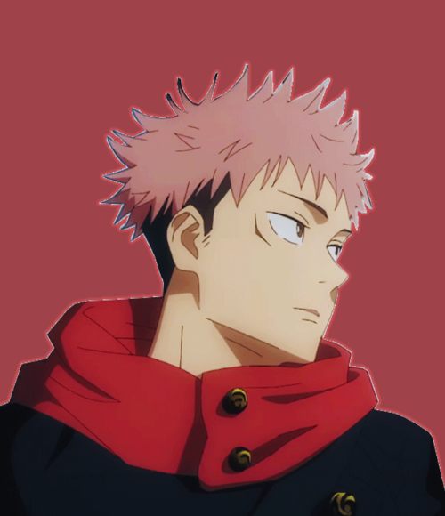
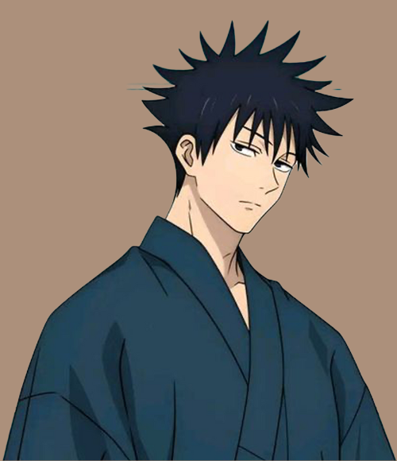
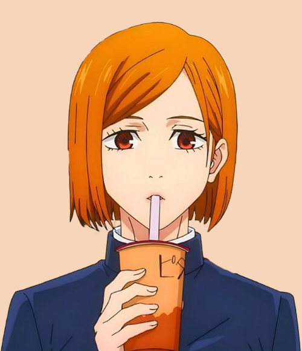

About Satoru Gojo
Satoru Gojo is one of the main protagonists of the Jujutsu Kaisen series.
He is a special grade jujutsu sorcerer and widely recognized as the strongest in the world. Satoru is the pride of the Gojo Clan, the first person to inherit both the
Limitless and the Six Eyes in four hundred years. He works as a teacher at the
Tokyo Jujutsu High and uses his influence
to protect and train strong young allies.
Skills
Jujutsu Kaisen
Clans
- Abilities
Master Hand-to-Hand Combatant/Great Tactical Intellect
- Jujutsu
Infinity/Limitless/Six eyes
- Power
The most powerfull in the mordern Jujutsu Kaisen after the King of Curses
- Overall Skill Level
Satoru is known to be the strongest sorcerer in the series, holding both immense amounts of cursed energy and a dangerously powerful technique.
- Master Hand-to-Hand Combatant
Satoru is as skilled as the millennia-old Kenjaku in terms of pure hand-to-hand combat without any cursed energy.
- Immense Strength
Satoru has extraordinary physical strength to fight against powerful curses without a problem.
- Immense Speend & Reflexes
Satoru was even able to successfully react to and dodge the attacks of someone of Toji Fushiguro's level.
- Immense Endurance
Despite rarely being put in dangerous situations, Satoru has proven himself to be overwhelmingly resilient when needed to be. When Toji Fushiguro stabbed him through the chest when he had just deactivated his Infinity.
- Great Tactical Intellect
Satoru is quite tactical and capable of figuring out his opponent's plan with minimum information.
- Immeasurable Cursed Energy
Satoru Gojo is known within the jujutsu society as the strongest jujutsu sorcerer in the world.
- Black Flash
A technique that creates spatial distortion when a user connects with an impact of cursed energy within 0.000001 seconds of a physical hit.
- Limitless
This technique grants its users nigh-absolute control over space through cursed energy manipulation at an atomic level, resulting in multiple subsequent results and techniques within the overall ability.
- Infinity
Being the neutral form of the Limitless, the Infinity is commonly known as the ability to stop.
- Reversal Red
Using his reversal technique to invert the properties of Blue, Satoru activates the divergence of his infinity and causes an extremely powerful repulsive force, repelling all matter in its vicinity.
- Domain Expansion : Unlimited Void
It creates a metaphysical space that causes the victims to receive all kinds of stimuli and information endlessly, restraining their thought processes and actions.
- Shinjuku Showdown Arc
After Satoru Gojo is freed and Sukuna attains a new body, the final conflict between the strongest is fight.
- Culling Game Arc
Jujutsu High students are ready to head into the Culling Game, an unprecedented jujutsu battle royal. As they form a plan.
- Itadori's Extermination Arc
Satoru Gojo is determined to be the cause of the sudden shift and Yuji Itadori's suspended sentence is back in effect.The one tasked with executing yuji is Yuta Okkotsu.
- Shibuya Incident
A curtain is cast to trap civilians in Shibuya, with many of them begging for one man, Satoru Gojo. Multiple squads of sorcerers are dispatched to the scene.
- Gojo's Past Arc
A story from the past.. Satoru Gojo and Suguru Geto are given a mission to protect and escort a young girl.
- Death Painting Arc
The first-years are sent to investigate a series of strange disappearances at Fushiguro's former school and even worse,this threat might just involve his sister!.
- Kyoto Goodwill Event Arc
With newfound ability, Yuji makes his return to his peers before the start of the Kyoto Goodwill Event. However, the second and third-years of Kyoto Jujutsu High are ordered to kill him during the chaos of the team battle.
- Vs.Mahito Arc
Yuji is assigned with the grade 1 sorcerer and former salaryman, Kento Nanami, to work on a hard mission. A strange curse named Mahito would bring him unexpected pain.
- Fearsome Womb Arc
Yuji Itadori is an average high school student with above-average ability. When he meets the jujutsu sorcerer known as Megumi Fushiguro and devours a mysterious finger, he is pulled into the strange and dangerous world of curses.
- Cursed Child Arc
Yuta Okkotsu, a 16-year-old with a powerful curse, has accepted to be executed. However,there is another way entering a school to learn about curses.
- Big Three Famailies
The three great sorcerer clans of the jujutsu world are the Zenin Clan, the Gojo Clan, and the Kamo Clan. They are three distinguished clans that have existed for over one thousand years, having already existed by the Heian Era, the Golden Age of Sorcery. Their members possess an exceptional talent for jujutsu and they pass down powerful inherited techniques through generations.
- Gojo Clan
The Gojo Clan is a clan that who descends from Michizane Sugawara, one of Japan's renowned Big Three Vengeful Spirits.While Satoru Gojo is the clan head and is condisdered the mordern era's strongest one-man act.
- Kamo Clan
The Kamo Clan is considered the core of the conservative faction at the heart of jujutsu headquarters and are close with the higher-ups of jujutsu headquarters. They are an orthodox group who value tradition and blood lineage above all else but they carry a stain they cannot wipe away on their family history.In the past, they have expelled the evilest sorcerer in history,Noritoshi Kamo
- Zenin Clan
The Zenin Clan is a combat-oriented clan where those in control only value and respect power.The sorcerers of the Zenin clan place an emphasis on talent in sorcery above all else to the point where they will oppress even their own relatives.
- Other Sorceer Famailies
There are various other sorcerer families as well. One such clan is the Inumaki Clan, who are cursed speech users who inherited the technique.A prominent sorcery family of the past was the Fujiwara Clan
- Inumaki Clan
The Inumaki Clan is not one of the Big Three Families, but they are a widely recognized sorcerer clan made up of cursed speech users marked with the Snake Eyes and Fangs sigil across their mouths.
Services
Sorcerer
Special Grade:Strongest sorcerer alive in mordern jujutsu world.
Born with two extremely rare inate techniques Limitless and Six Eyes.
Know More
Teacher
Works as a techer at Tokyo Jujutsu High. Strongest sorcerer alive,
with both decades of battle experience and insider knowledge of
the jujutsu society.
Know More
Violin Practice
Megumi Chan has Violin Practice with me now. Lets Go home megumi chan,
Today I'll have you master "Twinkle Twinkle Little Star".
Know More
The Trio

Yuji Itadori
Yuji is a fair person who truly cares for
not only his comrades but anyone he views
as people with their own wills.

Fushiguro Megumi
Megumi is a very outwardly stoic,
aloof, and calculating individual.
He usually has a neutral facial expression
that he rarely changes and appears to take
every situation seriously.

Kugisaki Nobara
Nobara is a confident and brash young woman
with an unshakable character. More than anything,
Nobara is determined to stay true to herself no matter what.
See More